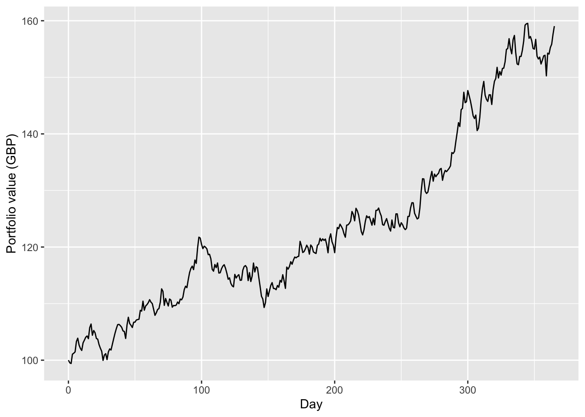
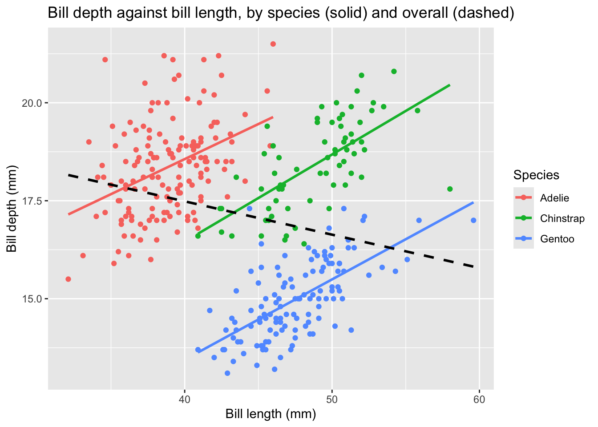

These questions are for extra practice after Lab 9, using the same data. Tasks 1–4 follow on from Task 1 of the lab (from loops to maps), and Tasks 5–8 from Task 2 of the lab (many files, and failing well). Questions marked Extension are more challenging.
The cell below loads the penguins data, and recreates the objects from the lab that these questions use: numbers, the combined data from the files in data/penguins split into one tibble per file, and the final version of fit_bill_model(), which checks its input.
library(tidyverse)
Warning: package 'dplyr' was built under R version 4.4.3
penguins <-read_csv("data/penguins.csv")numbers <-1:10files <-list.files("data/penguins", pattern ="\\.csv$", full.names =TRUE)penguins_all <- files |>set_names() |>map(read_csv) |>list_rbind(names_to ="file")by_file <-split(penguins_all, penguins_all$file)fit_bill_model <-function(data) { n_complete <-sum(!is.na(data$bill_length_mm) &!is.na(data$bill_depth_mm))if (n_complete <2) {stop("Need at least 2 penguins with both bill measurements, but found ", n_complete, ".") } model <-lm(bill_depth_mm ~ bill_length_mm, data = data)tibble(slope =coef(model)[["bill_length_mm"]],intercept =coef(model)[["(Intercept)"]] )}
Task 1: More Mapping
This task follows on from Task 1 of the lab.
set.seed(123)people <-c("Alice", "Bob", "Charlie")greetings <-c("Hello", "Hi", "Howdy")tibbles <-list(df1 =tibble(x =1:3, y =5:7),df2 =tibble(a =rnorm(5), b =rnorm(5, mean =1)),df3 = penguins)file_names <-c("numbers", "random", "penguins")
Solution. For each number in numbers, create a logical vector that is TRUE where the number is even and FALSE where it is odd. A number is even if its remainder on division by 2 is zero. The comparison n %% 2 == 0 is already TRUE or FALSE, so there is no need to wrap it in if_else(n %% 2 == 0, TRUE, FALSE):
%%, == and paste0() are all vectorised: given a vector, they work on every element at once, and return a vector of results. So mapping them over numbers one element at a time only adds code. mean() is different: given a list of vectors, it can’t compute the mean of each one, so in the lab we needed map to apply it to each vector in turn. As the Week 9 notes say, mapping is for functions that work on one element at a time.
Solution. For each <name> in people and each <greeting> in greetings, create a string that says <greeting> <name>. In map2, .x comes from the first vector (people) and .y from the second (greetings), so paste(.y, .x) puts the greeting first:
map2_chr(people, greetings, ~paste(.y, .x))
[1] "Hello Alice" "Hi Bob" "Howdy Charlie"
Write each tibble in tibbles to a file with the corresponding name in file_names in the directory results/.
write_csv is called for its side effect of writing a file, not for the value it returns. map2 would still collect those return values (each tibble, unchanged) into a list and print it, filling the output with a page of penguins. walk2 is the version of map2 for side effects: it calls the function in the same way, then returns its input invisibly, so nothing is printed.
set.seed(123)functions <-list( \(x) x +1, \(x) x *2, \(x) sqrt(x))daily_returns <-rnorm(365, mean =0.001, sd =0.01)
Solution. Compute the sum and product of numbers. The operators + and * are functions of two arguments, so they can be passed to reduce like any other function; the backticks let us refer to them by name:
reduce(numbers, `+`)
[1] 55
reduce(numbers, `*`)
[1] 3628800
Apply the composition of all functions in the list functions to a starting number. Here the accumulator x is the current value, and each element f of the list is the next function to apply to it, so the functions are applied in the order of the list. Starting from 1, this gives \(1 + 1 = 2\), then \(2 \times 2 = 4\), then \(\sqrt{4} = 2\). We need .init, because the accumulator is a number while the elements of the list are functions, so the accumulator can’t start at the first element:
reduce(functions, \(x, f) f(x), .init =1)
[1] 2
Calculate the portfolio value after one year, starting with £100.
Each day, the portfolio’s value is multiplied by 1 + r, where r is that day’s return. The accumulator is therefore the portfolio value, which is a different kind of quantity from the elements of daily_returns, so it can’t start at the first element. Instead we start it at £100 with .init:
reduce(daily_returns, \(value, r) value * (1+ r), .init =100)
[1] 159.0491
Solution. The portfolio value after a year is £100 multiplied by 1 + r for every day’s return r, which is exactly what prod() computes:
(The two answers agree to within rounding error, so we compare them with all.equal() rather than ==.)
The prod() version is shorter, says what it computes more directly, and is faster, because prod() is implemented in compiled code. reduce is the tool for combining elements when there is no built-in function that does the job, such as composing the list of functions above, or, as the notes explain, when each pass through the data is expensive.
Solution. accumulate() works like reduce(), but returns every intermediate value of the accumulator, rather than just the last one. With .init, the first value is the starting £100, so there are 366 values: one for the start, and one for the end of each of the 365 days.
portfolio <-tibble(day =0:365,value =accumulate(daily_returns, \(value, r) value * (1+ r), .init =100))ggplot(portfolio, aes(x = day, y = value)) +geom_line() +labs(x ="Day", y ="Portfolio value (GBP)")

portfolio |>filter(value ==min(value))
# A tibble: 1 × 2
day value
<int> <dbl>
1 2 99.4
The portfolio was worth least at the end of the second day, just below the £100 it started with. It was below £100 on only three days (days 1, 2 and 26), and spent the rest of the year above it.
Task 3: One Line or Three?
This task follows on from Task 1 of the lab, where you fitted a separate line of bill depth against bill length for each species.
For every species, the slope is positive: penguins with longer bills tend to have deeper bills. But for all the penguins together, the slope is negative! A scatter plot coloured by species shows why:
ggplot(penguins, aes(x = bill_length_mm, y = bill_depth_mm)) +geom_point(aes(colour = species)) +geom_smooth(aes(colour = species), method ="lm", se =FALSE) +geom_smooth(method ="lm", se =FALSE, colour ="black", linetype ="dashed") +labs(x ="Bill length (mm)",y ="Bill depth (mm)",colour ="Species",title ="Bill depth against bill length, by species (solid) and overall (dashed)" )

Within each species, the line slopes upwards. But the species also differ from each other: Gentoo penguins have long but shallow bills, and Adelie penguins short but deep ones. A single line through all the penguins mostly follows these differences between the species, which run downwards, rather than the relationship within each species. This is an example of Simpson’s paradox: a trend that appears within every group can disappear, or even reverse, when the groups are combined. Fitting a separate model to each species, as in the lab, tells the more accurate story.
Task 4: Pure Functions
This task follows on from Task 1 of the lab, where you used walk for functions with side effects. Recall from the Week 9 notes that a function is pure if its result depends only on its arguments, and calling it has no side effects.
to_kg <-function(mass_g) mass_g /1000threshold <-4000is_heavy <-function(mass_g) mass_g > thresholdn_calls <-0count_rows <-function(data) { n_calls <<- n_calls +1nrow(data)}add_noise <-function(x) x +rnorm(length(x), sd =0.1)drop_missing <-function(data) { data <- data |>filter(!is.na(body_mass_g)) data}save_summary <-function(data, path) { result <- data |>summarise(n =n(), mean_mass =mean(body_mass_g, na.rm =TRUE))write_csv(result, path) result}
Solution.
to_kg is pure: its result depends only on mass_g, and it changes nothing.
is_heavy is impure, because its result depends on the global variable threshold as well as its argument. Changing threshold changes the answer, even though the argument is the same:
is_heavy(4500)
[1] TRUE
threshold <-5000is_heavy(4500)
[1] FALSE
threshold <-4000
count_rows is impure, because it has a side effect: <<- changes the variable n_calls outside the function every time it is called. (Its result does depend only on its argument.)
count_rows(penguins)
[1] 344
count_rows(penguins)
[1] 344
n_calls
[1] 2
add_noise is impure, because it generates random numbers, so calling it twice with the same argument gives different results:
add_noise(1)
[1] 0.9790207
add_noise(1)
[1] 1.037817
drop_missing is pure, even though it seems to change its argument data. Assigning to data inside the function changes a local copy, and the tibble that was passed in is unchanged:
nrow(drop_missing(penguins))
[1] 342
nrow(penguins)
[1] 344
save_summary is impure, because writing a file is a side effect.
To make is_heavy pure, we pass the threshold in as an argument. Giving it a default value keeps calls such as is_heavy(4500) working:
# A tibble: 1 × 2
n mean_mass
<int> <dbl>
1 344 4202.
summarise_mass can now be tested by calling it on a small tibble whose answer we know, and checking what it returns, without creating any files that the test would have to read back and then tidy up. Writing the file becomes one line at the edge of the analysis, as the notes recommend: the side effects are kept few and in one place, and everything else is done by pure functions.
This task follows on from Task 2 of the lab, where you made fit_bill_model() check its input.
Solution. The points \((1, 3)\), \((2, 5)\) and \((3, 7)\) lie exactly on the line \(y = 2x + 1\), so the fitted slope must be 2 and the intercept 1. The second test uses a single complete penguin, which the lab showed is not enough to fit a line. Both test datasets are created inside the function, so that it doesn’t depend on any global variables:
check_bill_model <-function(fit_fn) {# points exactly on the line depth = 2 * length + 1 on_line <-tibble(bill_length_mm =c(1, 2, 3), bill_depth_mm =c(3, 5, 7)) result <-fit_fn(on_line)stopifnot(isTRUE(all.equal(result$slope, 2)))stopifnot(isTRUE(all.equal(result$intercept, 1)))# a single complete penguin is not enough to fit a line one_penguin <-tibble(bill_length_mm =c(40, NA), bill_depth_mm =c(18, 17)) result <-try(fit_fn(one_penguin), silent =TRUE)stopifnot(inherits(result, "try-error"))"All tests passed."}check_bill_model(fit_bill_model)
[1] "All tests passed."
We compare with all.equal() rather than ==, because the fitted coefficients are not exactly 2 and 1, only very close:
Writing the tests also exposes a surprise in the first version of fit_bill_model() from Task 1 of the lab, which extracted the slope with coef(model)["bill_length_mm"]. Single brackets keep the name of the element, so the slope is a named number, and all.equal() reports the difference in names, even though the values agree:
old_slope <-coef(lm(bill_depth_mm ~ bill_length_mm, data = on_line))["bill_length_mm"]old_slope
bill_length_mm
2
all.equal(old_slope, 2)
[1] "names for target but not for current"
Double brackets, [[, extract just the value, which is why the final version uses them.
Solution. The file R/models.R contains:
#' Fit a straight line of bill depth against bill length#'#' Fits a linear regression of bill depth on bill length, and returns#' its slope and intercept.#'#' @param data A data frame with columns bill_length_mm and bill_depth_mm#' @return A one-row tibble with columns slope and intercept#' @examples#' fit_bill_model(penguins)fit_bill_model <-function(data) { n_complete <-sum(!is.na(data$bill_length_mm) &!is.na(data$bill_depth_mm))if (n_complete <2) {stop("Need at least 2 penguins with both bill measurements, but found ", n_complete, ".") } model <-lm(bill_depth_mm ~ bill_length_mm, data = data)tibble(slope =coef(model)[["bill_length_mm"]],intercept =coef(model)[["(Intercept)"]] )}
and the Quarto document loads it with
source("R/models.R")
The path is relative to the folder containing the Quarto document, so the project still works when it is moved to another computer.
Task 6: A Folder That Isn’t There
This task follows on from Task 2 of the lab, and also uses the defensive checks from the end of it.
Solution. A first version just wraps the code from the lab in a function:
With the misspelt name there is no error at all. list.files() doesn’t complain about a folder that doesn’t exist: it returns an empty vector of file names. Mapping over an empty vector gives an empty list, and list_rbind() turns that into a data frame with no rows and no columns. The problem only shows up later, when some other code looks for a column that isn’t there, far from its real cause:
Error in `count()`:
! Must group by variables found in `.data`.
✖ Column `species` is not found.
To fail fast, the function should check that it found some files before reading them:
read_penguin_folder <-function(path) { files <-list.files(path, pattern ="\\.csv$", full.names =TRUE)if (length(files) ==0) {stop("No CSV files found in '", path, "'. Is the folder name right?") } files |>set_names() |>map(read_csv) |>list_rbind(names_to ="file")}
read_penguin_folder("data/pengiuns")
Error in read_penguin_folder("data/pengiuns"): No CSV files found in 'data/pengiuns'. Is the folder name right?
Task 7: Reporting Failures
This task follows on from Task 2 of the lab, where you used possibly() to skip the files that could not be fitted.
Solution. The function needs to know the name of the file as well as its data, so that it can report it, so we map over both the tibbles and their names with map2. Inside the error function, conditionMessage(e) returns the error’s message: here, the clear message from our defensive fit_bill_model().
The slopes do differ between years: the Chinstrap slope is 0.15 in 2007 and 0.20 in 2009, and the Adelie slope varies between 0.16 and 0.22. But each slope is estimated from only 24 to 52 penguins, so we should expect it to vary from year to year by chance, even if nothing has changed. The change in the Chinstrap slope (0.05) is no bigger than the change in the Adelie slope between 2008 and 2009, which is based on twice as many penguins, and there is no consistent direction: the Adelie and Gentoo slopes go up and down from year to year, and for Chinstraps we only have two years. So there is no convincing evidence of a change, and we should not be confident in any.
To be more definite, we would need to know how much each slope could vary by chance alone, for example from its standard error or a confidence interval, which is beyond this course. Even then, three years is a very short time over which to detect a change.